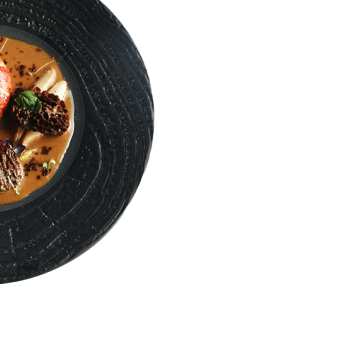
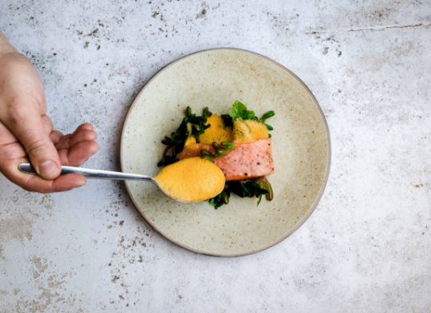
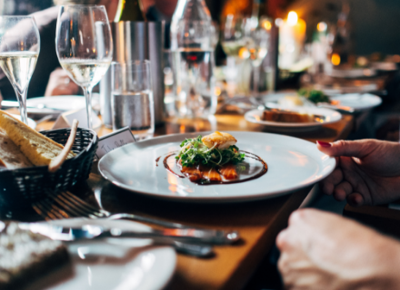

Konでは地元でとれた食材を使用しています。食材そのものの旨味を引き
出し、一品一品に生産者さんの想いや、つくり手であるオーナーシェフの
情熱を注いで皆様に提供させていただいております。
創業以来12年、皆様に愛され続けてきた味をお楽しみください。
フランス料理の代表作である魚のムニエル。
その時々で旬の魚を使ってカリっと焼き上げたお魚と、ソムリエに
よって選び抜かれた究極のいっぱいで私服の時をお過ごしください。


その時々で最高の食材を選び、料理を行います。
小前菜から前菜、ポタージュ、魚料理に肉料理、最後のデザートまで、こ
だわり抜いた当店だけのフルコースです。
時期によってメニューが異なりますので、お問い合わせください。